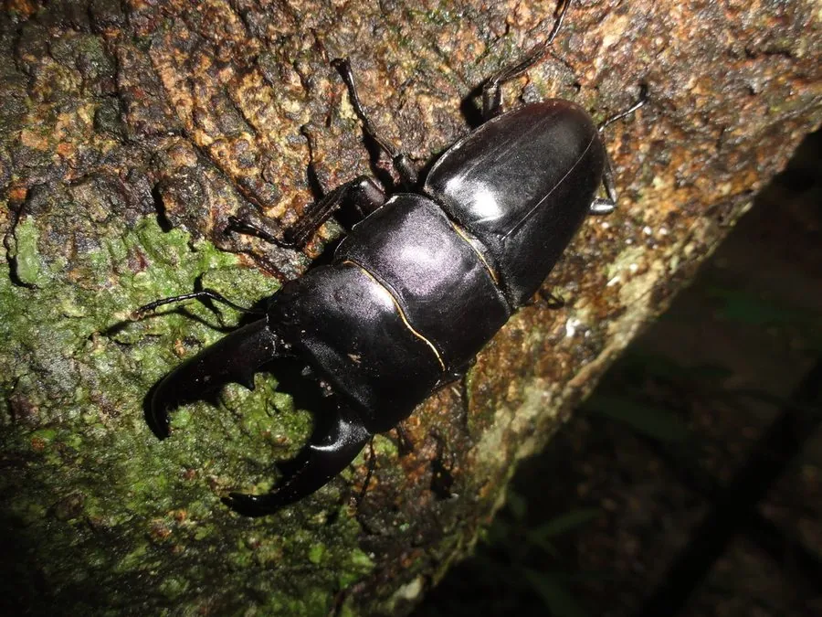

昆虫 · 动物界
扁锹甲 Dorcus titanus

体型扁平的锹甲，雄性上颚发达如钳，靠它夹斗争夺配偶，幼虫生活在腐木中，是亚洲常见的观赏甲虫。
- 分类
- 门节肢动物门纲昆虫纲目鞘翅目科锹甲科属大锹属
- 栖息环境
- 阔叶林与杂木林，幼虫在朽木和腐木中生活
- 地理分布
- 中国南方、日本、东南亚等亚洲东部和东南部地区
- 保护级别
- 暂无评估
物种志
扁锹甲成虫体长约 2.5–11 cm（含大颚），雌雄差异明显：雄虫大颚粗壮内弯、前端分叉，雌虫大颚短小；体黑褐色，鞘翅扁宽，表面有细密刻纹。大型雄虫的大颚长度可占体长近一半，是同类争斗的武器。
幼虫在朽木和腐木中取食，期长约 1–2 年，成虫羽化后主要吸食树液和发酵果汁，具趋光性，夜间常被灯光吸引，白天多藏在树洞或落叶层中。雄虫用大颚夹住对手，将其掀翻在地，以争夺树液和雌虫，大颚越大越占优势。扁锹甲分布在中国南方、日本和东南亚，亚种和地域型很多，岛屿种群常出现明显的体型差异，是亚洲最受欢迎的饲养甲虫之一；人工饲养需要准备腐木和适宜湿度。
形态与习性
- 食性幼虫取食朽木；成虫吸食树液与发酵果汁
- 体长雄虫含大颚约 4–11 cm，雌虫约 3–4 cm
- 生活史幼虫期约 1–2 年，成虫寿命数月至一年
- 武器雄性大颚用于夹住并掀翻对手
- 习性夜行、趋光，白天藏在树洞或落叶中
- 观赏亚洲最受欢迎的饲养甲虫之一
趣味知识
- 扁锹甲雄性大颚越大，夹斗时越占优势，但大颚并不能咀嚼食物。
- 幼虫在朽木中生活一两年，靠啃食木质获取营养。
- 岛屿上的扁锹甲常演化出体型差异明显的亚种。